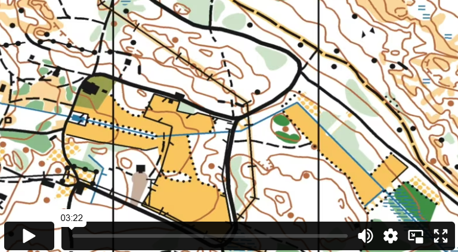

علامة الخريطة
خريطة التوجيه مُكوّنة من ألوان ورموز مختلفة. هذه الرموز تُظهر التفاصيل المختلفة في الطبيعة. باستخدام الألوان والرموز، يصبح من الأسهل التنقل بشكل صحيح. أول شيء تحتاج إلى تعلمه هو الألوان المختلفة في خريطة التوجيه.
الغابة العادية مُشار إليها باللون الأبيض على الخريطة. وذلك لأن جميع الرموز التي تُظهر التفاصيل المختلفة في الغابة يجب أن تكون واضحة على الخريطة. اللون الأصفر على الخريطة يُمثل الأراضي المفتوحة. غالبًا ما يكون من السهل التحرك فيها، ولكن أحيانًا تكون هذه الأراضي مزروعة، وفي هذه الحالة يكون من الممنوع السير عليها. المناطق الزرقاء الكبيرة والممتدة على الخريطة هي البحيرات، ولكن كل أنواع المياه الأخرى تظهر أيضًا باللون الأزرق على الخريطة، مثل الجداول أو الأراضي الرطبة. في بعض الخرائط، هناك درجات مختلفة من اللون الأخضر الفاتح لتوضيح أن الغابة أكثر كثافة في بعض الأماكن مقارنة بأماكن أخرى.